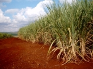
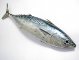

CTA

Informed Analysis, Expert Opinions

- Small fontsize

- Medium fontsize

- Big fontsize
Read the latest newsletters:
Agriculture

News and Analysis
Free Health clinics for livestock producers in Kilifi County, Kenya launched
Rwanda institutes a legal mechanism towards regulation of dairy industry to boost its growth
Premier Lab for Embryo Transfer set up in Kenya
Executive briefs
Executive Brief Update 2013: Cotton sector
Executive Brief Update 2013: Oil crops sector
Executive Brief Update 2013: Rice sector
Executive Brief Update 2013: Tea sector
Fisheries

News and Analysis
Fish markets enhance the dagaa fish trade in the sub region
AAK assist the grass root aquaculturist
Africa moving towards innovation and product development in the Fisheries sector.
Sea cucumbers saving lives: the radical charity giving Madagascan fishing communities hope
Executive briefs
Executive Brief Update 2013: Tuna sector: Issues and challenges
Executive Brief Update 2013: ACP–EU fisheries: Market access and trade
Executive Brief Update 2013: WTO and other international aspects of ACP–EU fisheries relations
Executive Brief Update 2012: ACP–EU fisheries: Market access and trade

 Facebook
Facebook Twitter
Twitter Vimeo
Vimeo YouTube
YouTube RSS
RSS